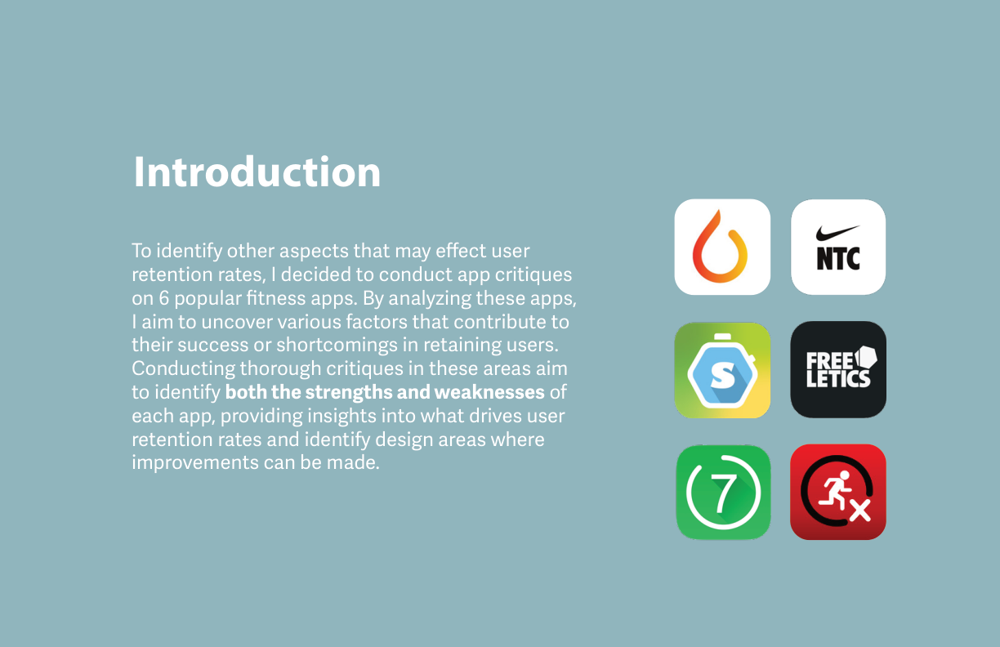
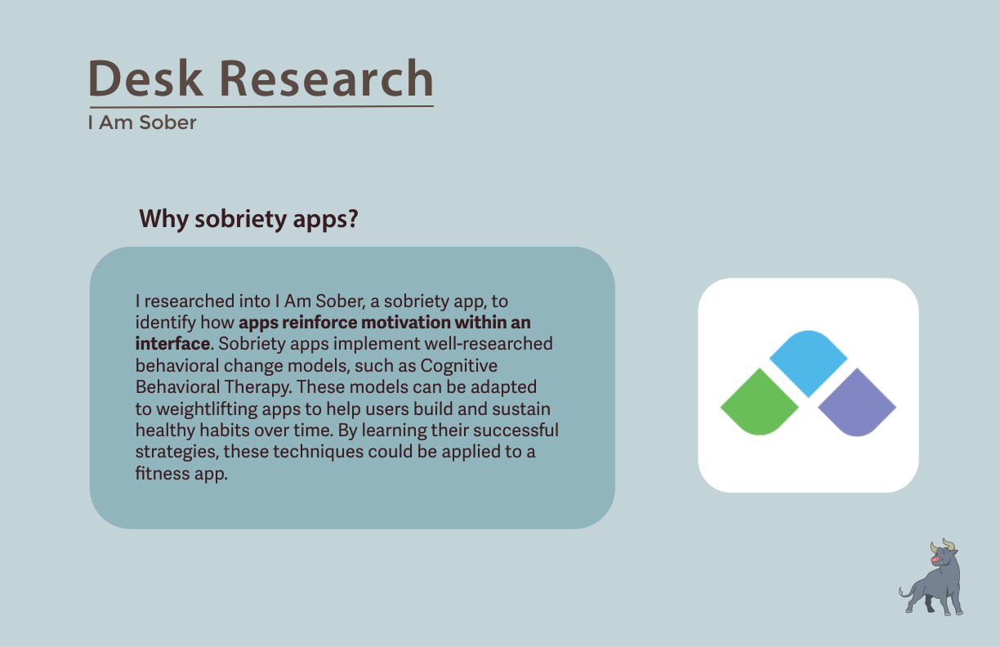
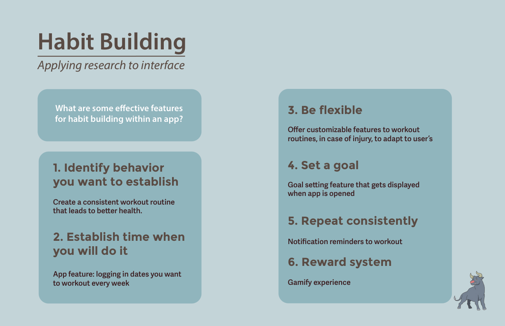
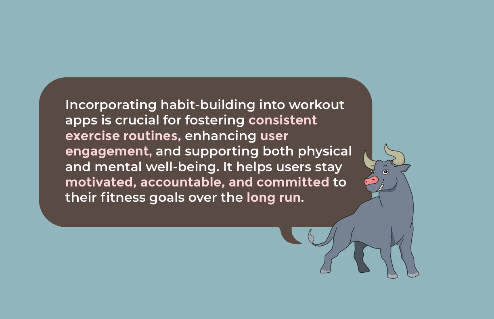
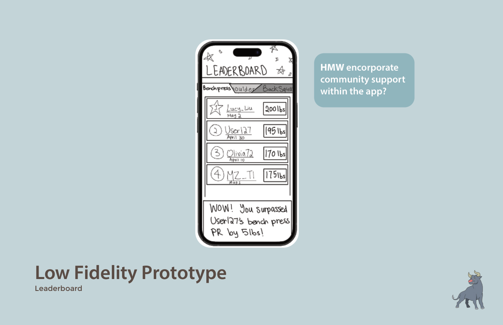
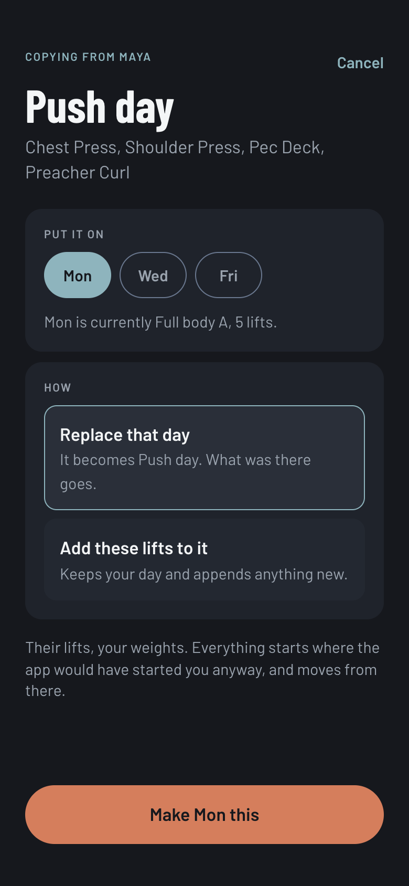
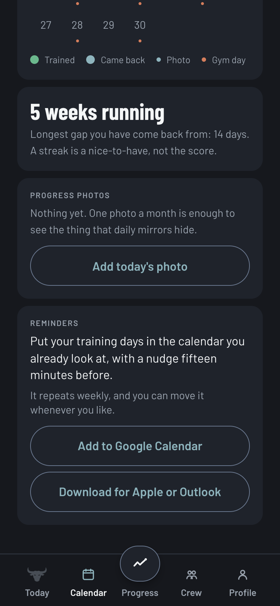

I audited 6 fitness apps, studied sobriety apps (which hold onto users far longer than fitness apps do), and ran 6 in-person interviews across three cohorts. The participants hit the same friction zones whether they were lapsed, active, or new to fitness apps.
Role
In 2023 I owned the research, UX strategy, flows, lo-fi testing, mascot direction, and high-fidelity design. In 2026 I redesigned the brand and built the product myself: 39 React components, 535 tests, a Supabase backend, and three accessibility audits.
Process
I audited fitness and sobriety apps, ran 6 interviews, mapped findings, and tested 4 core tasks in Figma. Three years later I rebuilt the app against that same research, with help from Claude Code: 92 commits between Aug 30 and Sep 10, 2026.
Impact
Testing moved the hierarchy from goal-setting first to workout logging first, and the build keeps that order. Building it also retired the leaderboard: ranking beginners by load contradicted the research, so a monthly challenge took its place.
2023 · Research and design
Research
Apr 8
Empathy & Definition
Apr 22
Ideation
May 3
Design
May 12
Implementation
May 19
2026 · Build and ship
Redesign + installable PWA
Aug 30–31
Crew backend
Sep 1–3
Oxide brand + mark
Sep 6–8
Workout features
Sep 6–9
Audits + fixes
Aug 31 → Sep 10
01 · The Problem
Most people quit within three months.
Research context · Retention data
71–80%
of users abandon their fitness app within 3 months of installing it
90%
quit their fitness goals entirely after three months
Dr. Muscle (2024) · StriveCloud (2024)
"Many people begin a workout regimen but lose focus and motivation after a short amount of time. Conventional gym apps frequently lack elements for goal setting and habit building."HabitaBull Lifting · Project Brief, Fall 2023

Fig. 01: Problem framing
02 · Research + Insights
Every app I audited had the same problems.

App critique. I read 6 apps for how they hold users, where they overcomplicate, and what they leave out.

Cross-industry research. I Am Sober: CBT-based motivation loops applied to fitness habit design.

Habit building framework. 6 principles from Atomic Habits translated to app features: identify, schedule, flex, set a goal, repeat, reward.

Interview participants. 6 people, Vancouver. Formerly used / currently active / never used: different question branches per cohort.

Fig. 02: Insight clustering across all 6 participants
What they wanted
- Simple interfaces usable mid-workout
- Progress visible over time, not just today's session
- Community or social layer for accountability
- Workouts that adapt to level and available equipment
What pushed them out
- Logging too time-consuming to maintain mid-set
- Apps felt generic, same routines regardless of goals
- No guidance for beginners on form, pacing, or rest
- Too many ads, paywalls, features unrelated to lifting

Fig. 03: Top 6 findings from interview clustering

Core design thesis: habit infrastructure is the product
03 · Design Process
Six questions set the direction.
I wrote six "How Might We" questions, one per top finding, to set the design direction. Then I mapped user flows for the two core journeys (building a custom routine and using auto-generate) and tested lo-fi prototypes against four tasks in Figma.
HMW 01Make it easy for new users to navigate through the app?
HMW 02Ensure that new users feel confident and informed when starting their fitness journey?
HMW 03Incorporate community support within the interface?
HMW 04Motivate youth to be disciplined and create healthy habits?
HMW 05Incorporate additional features and ensure a more engaging and supportive platform?
HMW 06Cater specifically to individual fitness goals and needs?

Fig. 04: Opportunities per finding, and feature ideation (green notes = built in Figma)

User Flow A. Creating a new lower-body workout routine: muscle group selection, exercise picks, animation previews.

User Flow B. Auto-generate: inputs equipment, target muscles, and available time. Outputs an editable routine with sharing and Spotify integration.

Lo-fi: Account setup. Name, past weights, favourite exercises, preferred workout days. Sets the "why" before day one.

Lo-fi: Routine builder. Full flow from profile to goal display to muscle group to exercise selection, minimal taps.

Lo-fi: Auto-generate. Equipment → body part → duration → editable generated routine. Lower barrier for beginners.

Lo-fi: Streak calendar. Workout calendar with a 6-day streak indicator and a photo album, so progress shows up as pictures, not only numbers.

Lo-fi: Leaderboard (2023, later cut). Community competition by exercise. It tested fine on paper; in the 2026 build, ranking people by absolute load read as the beginner shame the research warned about, so a monthly challenge replaced it (see Build + Ship).

Lo-fi: Exercise tutorial. Animated demonstration plus a list of common mistakes, so beginners know what to watch for.
04 · Brand
The mascot carries the brand.
The brand is built around the mascot, who carries the HabitaBull voice: strong, a little stubborn, and on your side. The 2023 bull grinned. The 2026 bull was redrawn with a closed, easy smile, because the app talks to you most on the days you nearly did not come, and a grin is the wrong face for that. The name lost its second word at the same time: it is just HabitaBull now.

The mark had to survive being small. For the app icon and tab symbol it was redrawn as a horned head, then the horns were re-curved twice because the first silhouette read as a bunny at 48px, and the whole thing was scaled down for padding. The icon sits on brand terracotta, optically centred rather than mathematically.
Display
Barlow Condensed
Headlines, numbers on the logging screen, the wordmark. Condensed so a weight like 147.5 lb fits a 390px screen at a size you can read mid-set.
Body
Barlow
Everything else. One family at two widths, so the app has one voice and the type scale collapsed from 19 ad-hoc pixel sizes to 9 steps.
The Oxide pass. The first build shipped with Tailwind's stock orange-500 and green-500 carrying every action and every success state. Both were replaced with values matched in chroma to the brand cyan, and every figure below is measured against a named surface. Orange is a fill, not a text colour. One action colour per screen.
Source: app/globals.css, with the contrast maths inline. Control boundaries hold a 3:1 floor on every surface they sit on.

Welcome. The 2023 cyan field, kept for exactly one screen. Dark ink on it measures 8.1:1; the old white wordmark was 2.23:1.

Personal record. The one screen that goes full terracotta. "Only your own numbers. Nobody else is in this."

Form cue. The 2023 tutorial idea, rebuilt: the bull speaks once, on the set where the mistake usually happens, not every set.

Why do you lift? Borrowed from I Am Sober, per the 2023 research. Your answer comes back to you on the days you do not feel like it, and it is never rewritten.
05 · Build + Ship
I built it in 2026.
The 2023 study stopped at lo-fi prototypes and a brand guide. Between August 30 and September 10, 2026, I rebuilt HabitaBull as a shipped product against that study's own research, with Claude Code as a pair for the build: 92 commits, a Next.js 16 and React 19 app in TypeScript with Tailwind v4, a Supabase backend for the social features, Vitest for the logic, and an installable PWA deployed on Vercel.
It is phone-only on purpose. Every screen is designed at 390 by 844 and the desktop view just draws that device. Installing is not cosmetic either: iOS evicts script-writable storage after seven idle days for uninstalled sites, and the user who disappears for three weeks is exactly who this product is for. Uninstalled, they would come back to an empty app.
Kept from 2023
- Log a workout first, set goals later. The lo-fi finding that flipped the hierarchy is the app's information architecture.
- Auto-generate from equipment, muscles, and time. Now it also takes a plain-language description of your week.
- The streak calendar with photos. Streaks are shown, but "a streak is a nice-to-have, not the score."
- Setting the "why" before day one, borrowed from sobriety apps.
Changed in the build
- The leaderboard is gone. Ranked by absolute load it shames the beginner the whole study was written for. A monthly challenge measured against your own schedule replaced it.
- Day types remember their own lineup, so pressing "Leg day" brings back yours, not a template.
- Cardio became its own category, with incline logging and planks in seconds.
- Nothing counts against you during rest. The timer says so: "Nothing is counting."
What each 2023 finding became, three years on. The six findings from the interviews are the build's spec. Each one is now a structural decision, not a feature beside the product.
- 01 · One thing per screen, made structuralExactly one orange action per screen and never two, because orange is the only fill that isn't a shade of the ground. The tab bar is absent during a workout: mid-session there is one thing to do.
- 02 · History is the engine, not a feature beside itClear every target rep and the weight goes up one increment; miss on three consecutive sessions and it cuts 10% and rebuilds; anything else repeats. Repeating is a valid outcome.
- 03 · Logging survives one thumb, mid-set56px targets with 44px as a floor, tabular figures so columns don't jitter, and a keyboard that is opt-in: it appears only after a deliberate tap on the number, never on entering the screen.
- 04 · A crew joined by a code somebody reads outNo account and no password anywhere in the product. What a crew sees is who trained on which day and a photo they chose to share. There is no weight and no ranking in the crew, and the database has no column for one.
- 05 · Every lift teaches itselfAll 53 carry a form cue, three or four ordered steps and at least two named mistakes, enforced by a test rather than by diligence. Shown once, on the set where it usually goes wrong.
- 06 · The week is built from her, not from a catalogueGenerated from level, the days she can actually keep and the equipment she has. "Something hurts today" rebuilds the day and changes only today.
Most gyms are a dead spot. Weight rooms are in basements. Everything the app knows already lived on the phone, but it still could not open without a network, because the page itself had to be fetched. A service worker now caches the shell at install, so one visit at home is enough. The document is still fetched network-first, which is the rule that stops this becoming the usual installed-app failure of serving a build from three weeks ago.
Underground, the plan, logging, the timer and the record all work. Two things need a signal, so two things say so: the crew screen used to report "Just you, for now." to somebody with five people in her crew.

AI week setup. Describe your week instead of tapping it out. "Three is the number beginners actually keep."

Today. One button. Your reason, this week, and the goal sit underneath it, in that order.

Logging. Steppers you can hit one-handed between sets, or type the number. Last time's numbers are right there.

Set-logged beat. A confirmation with haptics that escalates by result. A best holds a second longer than a plain set.

Rest timer. Rings and buzzes when rest ends. Rest pace is chosen at signup, with a card explaining why yours differs.

Comeback beat. When you return after a gap, the app says the gap does not undo anything. Comebacks are counted on purpose.

Monthly challenge. What replaced the leaderboard. The target is your own schedule counted, and it says so when the month can no longer fit it.

Crew. Shared days, photos, likes and replies on a real backend. Never what anybody lifted, and never in order.

Copy a workout. Open a friend and take their lineup without taking their numbers. Their lifts, your weights.

Progress. "You show up on Mondays." Consistency first, then lift charts and body weight. No goal weight, by design.

Calendar. The 2023 streak calendar, with progress photos and reminders that go into the calendar you already look at.

Export and import. One file holding every session, note and photo. Your data lives on your device and nowhere else.
Three things the 2023 page promised, now real. User Flow B above lists Spotify integration as an intention. It is not an intention any more.
- Spotify at workout startPaste a playlist link once; starting a workout opens it. No OAuth, no account, degrades to silence.
- Body-weight trackingA dated weigh-in with a line chart on Progress. No goal weight, on purpose.
- Progress chartsOne chart component for lifts and body weight, replacing a sparkline the empty state was already calling a line.
92
Commits between Aug 30 and Sep 10, 2026, on one branch, one person with Claude Code
39
React components, plus API routes for the crew and for AI week setup, and a schema for Supabase
535
Vitest cases passing at the current commit, plus a smoke test that runs the crew routes against a stand-in Supabase
0
Retention or usage numbers claimed. It has not launched to users yet, so there are none, and this page will not invent any
06 · Accessibility + Audit
Three audits.
Each audit ended in a commit that records what was measured and what changed. The point of logging a set one-handed between working sets is that you should be able to correct a mis-logged one the same way, so every target size and contrast ratio in the app was checked with a tool before it shipped.
AUDIT 01 · PWA LAUNCH
Every control clears 44 by 44.
The set segments were the worst offender at 107 by 6 pixels. A
.tap utility grows the target and subtracts the same amount in margin, so no layout moves. Contrast was computed for all 21 token pairs in use; every text pair passes AA, most at AAA.Deliberately no maximumScale: locking zoom on a fixed layout is a WCAG 1.4.4 failure.
AUDIT 02 · APPLE HIG
Regressions the palette swap caused.
The PR celebration's secondary text passed against the old brighter orange and fell to 4.39:1 on Oxide, under Apple's 4.5:1 for text up to 17pt. Raised to 5.17:1. Crew member rows were 26px-tall bare buttons; padded to 44px with a matching negative margin.
AUDIT 03 · 3 P1s, 5 P2s, 4 P3s
A modal that claimed aria-modal.
The crew post overlay said aria-modal while 218 elements outside it stayed tabbable. Focus is now trapped both ways, the scroll region is inert, and closing returns focus to the thumbnail that opened it. Control boundaries were re-measured per surface: 3.97, 3.52 and 3.00 to 1.
Three orange markers next to an orange "Got it" made four orange things on a screen allowed one.
One knowing deviation is written down rather than hidden: the consistency grid's missed cells stay below 3:1 on purpose, because raising them makes every skipped day as loud as every completed one, and the whole product exists to stop that being the feeling.
07 · Reflection
What I learned.
Cross-industry research changed everything.
Studying sobriety apps was an odd move for a fitness project. But I Am Sober had already cracked the retention problem I was working on; it just talked about it in recovery terms. Looking outside fitness showed me fixes the six-app audit never would have. Three years on, "why do you lift?" is still the second screen.
The mascot did real UX work.
The bull started as decoration. By the end he was doing the work: he gives the app a voice, a reason to celebrate a PR, and enough presence that skipping a workout feels like letting someone down. In the build he also had to survive 48px, which is how a grin became a smile and a bunny became a bull.
Lo-fi testing changed the hierarchy.
My first prototype opened with goal-setting, which felt logical and tested badly. People wanted to log a workout first and set goals later, once they'd seen what the app could track. I had built from the product's logic instead of from the first thing you actually want to do.
Some findings only bite when the data is real.
The 2023 research said beginners quit when they feel ranked, and the leaderboard survived that finding on paper for three years. It did not survive a week of real sessions flowing through the screens. A design that contradicts its own research can look fine right up until it runs. That is the strongest argument I have for designers building the thing.